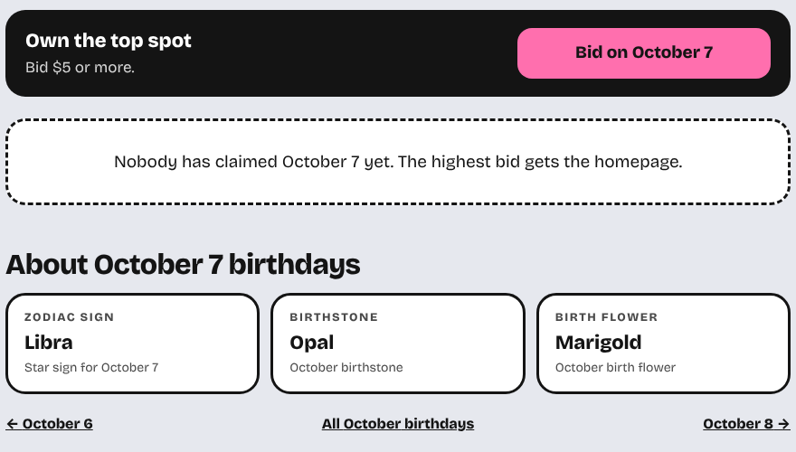
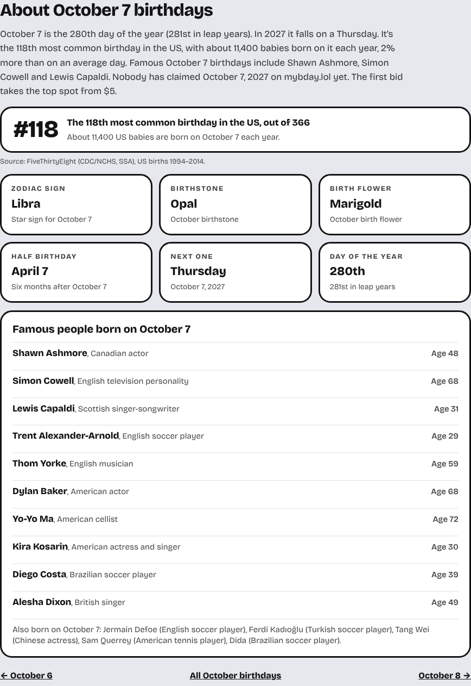
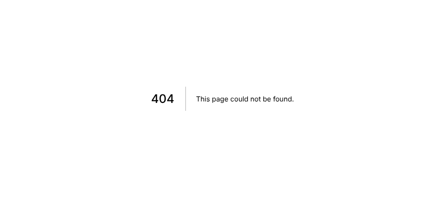
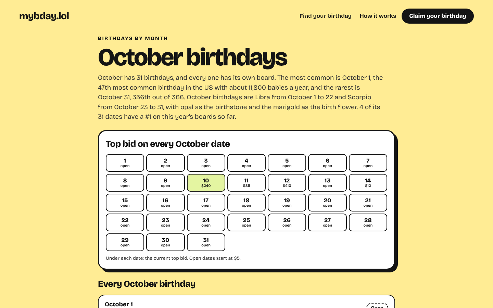
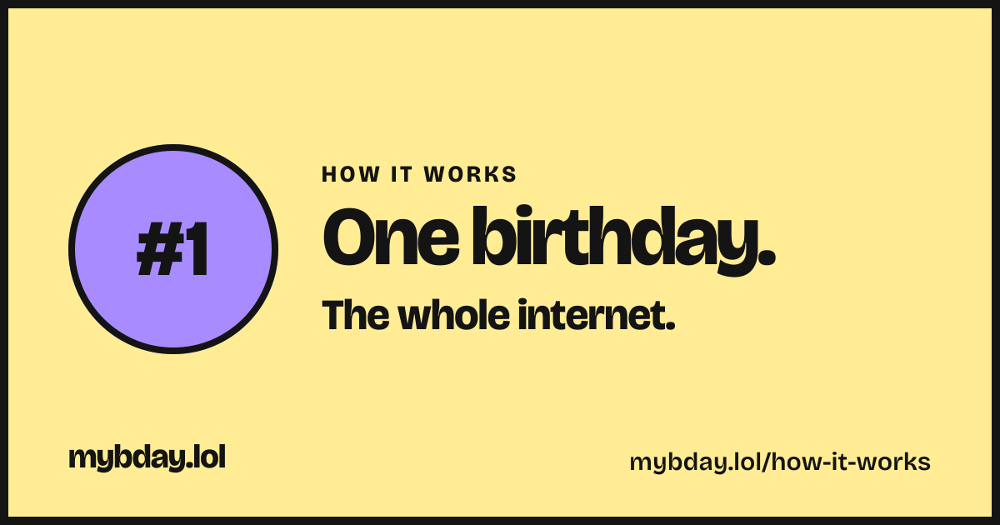

We ran the same 44 checks on every public page before and after the SEO work: all 366 birthday pages, the 12 month pages, the homepage, How it works, Terms and Privacy. 25 checks went from failing to passing.
/october and the rest: every date with its top bid, its #1, how common it is and who was born that day. They link all 366 date pages, so Google can reach every one.
How common the birthday is in the US (FiveThirtyEight births data, #1 to #366), half birthday, the weekday it falls on next, day of the year.
Up to 15 living actors, musicians, athletes and creators per date, from Wikidata, ranked by Wikipedia views and refreshed every month. The admin screen (step 10) will let you hide anyone.
Written from each page's own data: who was born that day, how common it is, who leads the board. All 382 are unique and the right length for Google.
Every date, month and personal link shares a card in the person's colors with their photo and name, like the preview on the Success page.
A sitemap of all 382 public pages with real update dates, breadcrumbs, and famous people linked to their Wikidata entries for Google and AI search.





| October 7 | Before | After |
|---|---|---|
| Title | October 7 Birthday: How Common It Is, Famous Birthdays & Who's #1 Today | mybday.lol | October 7 Birthday: Famous People, Facts & Who's #1 |
| Description | Everyone celebrating a birthday on October 7, ranked. See who owns the day, send them a gift, famous people born on October 7, and bid to take the top spot. | Born on October 7: Shawn Ashmore and Simon Cowell. It's the 118th most common birthday in the US. Nobody has claimed it for 2027 yet. Bids start at $5. |
| Words | 82 | 320 |
| Unique content | 16% | 37% |
| Structured data | none | BreadcrumbList, WebPage |
| Share image | none | yes |
| October | Before | After |
|---|---|---|
| Title | page missing (404) | October Birthdays: Famous People, Facts & Top Bids |
| Description | page missing (404) | October's most common birthday is October 1 and its rarest is October 31. Birthstone opal, flower marigold. 4 of 31 dates have a #1 so far. |
| Words | 0 | 612 |
| Unique content | none | none |
| Structured data | none | BreadcrumbList, CollectionPage |
| Share image | none | yes |
| Homepage | Before | After |
|---|---|---|
| Title | mybday.lol | Birthday Leaderboard: Bid to Own Today's Spot |
| Description | Bid on your birthday. The highest bid owns the homepage. | Today is October 10 and Jess Moreno owns it with $240. Every date has its own board: bid for the top spot, boost friends and send gifts straight to them. |
| Words | 204 | 204 |
| Unique content | none | none |
| Structured data | none | Organization, WebSite |
| Share image | none | yes |
Most important first. The source line under each check names the rule it comes from.
| Check | Area | Severity | Before | After | After, detail |
|---|---|---|---|---|---|
| robots.txt does not block pages that should be indexed or readseo-technical §1 | Crawlability | critical | Pass | Pass | |
| Every public page (366 dates, 12 months, home, FAQ, legal) answers 200seo-technical §1 | Crawlability | critical | Fail | Pass | 382/382 pass |
| Public pages are not noindexseo-technical §2 | Indexability | critical | Pass | Pass | 382/382 pass |
| Every page has a titlequality-gates.md | On-page | critical | Pass | Pass | 382/382 pass |
| All JSON-LD blocks parseseo-schema | Structured data | critical | Pass | Pass | 382/382 pass |
| Date pages are ≥40% unique (average 37%, measured on 3-word sequences in the main content)seo-programmatic: Thin Content Safeguards | Content | high | Fail | Fail | 17/366 pass |
| Every date and month page is within 3 clicks of the homepageseo-technical §1 (crawl depth) | Crawlability | high | Fail | Pass | 378/378 pass |
| Each month page (hub) links to every date in itseo-programmatic: Internal Linking (hub/spoke) | Crawlability | high | Fail | Pass | 12/12 pass |
| No internal link leads to an error pageseo-page: Internal links | Crawlability | high | Fail | Pass | 383/383 pass |
| robots.txt existsseo-technical §1 | Crawlability | high | Fail | Pass | |
| Sitemap lists home, FAQ, all 366 dates and all 12 monthsseo-programmatic: Sitemap | Crawlability | high | Fail | Pass | 380/380 pass |
| sitemap.xml exists and parsesseo-sitemap | Crawlability | high | Fail | Pass | |
| Every public page has an absolute, self-referencing canonicalseo-programmatic: Canonical Strategy | Indexability | high | Fail | Pass | 382/382 pass |
| Every page has a meta descriptionquality-gates.md | On-page | high | Pass | Pass | 382/382 pass |
| Descriptions are uniquequality-gates.md | On-page | high | Pass | Pass | 382/382 pass |
| Exactly one H1 per pageseo-page | On-page | high | Pass | Pass | 382/382 pass |
| Titles are uniquequality-gates.md | On-page | high | Pass | Pass | 382/382 pass |
| Share images load (sampled: home, 3 dates, a month, FAQ, a personal link)06-seo.md (OG image per date) | Sharing | high | Fail | Pass | 7/7 pass |
| Open Graph title, description, url and image on every shareable pageseo-page: Technical Elements | Sharing | high | Fail | Pass | 380/380 pass |
| No deprecated schema types (HowTo, SpecialAnnouncement…)deprecated-types-2024-2026.md | Structured data | high | Pass | Pass | 382/382 pass |
| Date and month pages have 300+ words of main contentseo-programmatic: Quality Gates (<300 words) | Content | medium | Fail | Pass | 378/378 pass |
| robots.txt points to the sitemapseo-programmatic: Sitemap | Crawlability | medium | Fail | Pass | |
| Sitemap holds no noindex, redirected or missing URLsseo-programmatic: Sitemap | Crawlability | medium | Pass | Pass | |
| claude-seo sitemap_discovery finds a valid sitemapsitemap_discovery.py | Crawlability | medium | Fail | Pass | |
| Personal links canonicalise to their date pageseo-technical §2 (duplicates) | Indexability | medium | Pass | Pass | |
| Pages declare a language and a mobile viewportseo-technical §5 | Indexability | medium | Pass | Pass | 382/382 pass |
| Claim, checkout result and unsubscribe pages are noindex06-seo.md + seo-technical §2 | Indexability | medium | Fail | Pass | 4/4 pass |
| Impossible dates answer 404, not a pageseo-technical §2 | Indexability | medium | Pass | Pass | 3/3 pass |
| Descriptions don't restate the title (metadata_template site_risk: low)metadata_template.py | On-page | medium | Fail | Pass | 382/382 pass |
| Titles are 30–60 characters (Google truncates around 60)quality-gates.md | On-page | medium | Fail | Pass | 382/382 pass |
| Personal links share their own card (handoff v2)Handoff v2 / 06-seo.md | Sharing | medium | Fail | Pass | |
| Date pages carry BreadcrumbList + WebPageseo-schema / schema-types.md | Structured data | medium | Fail | Pass | 366/366 pass |
| Home pages carry Organization + WebSiteseo-schema / schema-types.md | Structured data | medium | Fail | Pass | 1/1 pass |
| Month pages carry BreadcrumbList + CollectionPageseo-schema / schema-types.md | Structured data | medium | Pass | Pass | 12/12 pass |
| content_quality.py scores 60+ on main contentcontent_quality.py | Content | low | Pass | Pass | 382/382 pass |
| Homepage explains itself in 500+ words (204 now)quality-gates.md (homepage) | Content | low | Fail | Fail | |
| Old /oct-7 share links redirect permanently to /october-7seo-technical §4 (301, one hop) | Crawlability | low | Pass | Pass | |
| Sitemap entries carry <lastmod>seo-programmatic: Sitemap | Crawlability | low | Fail | Pass | |
| Descriptions are 120–160 charactersquality-gates.md | On-page | low | Fail | Pass | 382/382 pass |
| Heading levels don't skip (H2 → H4)seo-page | On-page | low | Pass | Pass | 382/382 pass |
| Clickjacking protection (X-Frame-Options or CSP frame-ancestors)seo-technical §3 | Security | low | Fail | Pass | |
| referrer-policy headerseo-technical §3 | Security | low | Fail | Pass | |
| x-content-type-options headerseo-technical §3 | Security | low | Fail | Pass | |
| Twitter/X card is summary_large_imageseo-page: Technical Elements | Sharing | low | Fail | Pass | 380/380 pass |
About the 37%. The toolkit wants each generated page to be at least 40% different from its siblings, and stops treating it as a risk below 30%. Every date page carries the same board text from the mockup ("Own the top spot", "Bid on…", the card labels), so a 3-word comparison always counts that part as shared; the rest (the date's facts, rank and up to 15 people) is different on every page. Shortening the summary paragraph got the figure to 39% but pushed most pages under 300 words, so we kept the fuller version. What would close the gap is more writing per date, for example a short intro you write for the dates you care most about, or a holidays/events list per date. The homepage is the mockup's own copy, so its word count stays as designed.
The checks come from claude-seo (2.4.2), an open-source SEO toolkit: its own scripts read each page's title, description, headings, canonical, structured data and share tags, score content quality and spot templated metadata, and its written rules set the thresholds (titles 30–60 characters, descriptions 120–160, generated pages at least 40% unique and 300 words). Both runs used a production build of the site on test data, with the same pages and the same rules. Uniqueness compares every 3-word sequence on a date page's main content with all the other date pages. Scores weight each check by severity (critical 10, high 5, medium 3, low 1). These are the toolkit's rules of thumb, not Google's; they are a strong sign of how search engines will see the site, not a ranking promise.
Before: 2026-10-10T07:46:15+00:00. After: 2026-10-10T09:46:24+00:00. The full reports are in the repository under seo-audit/reports/.